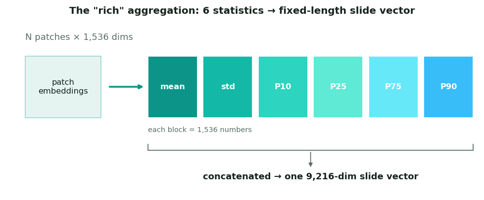
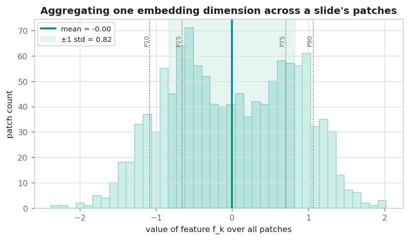
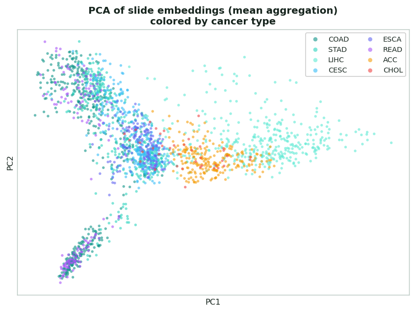
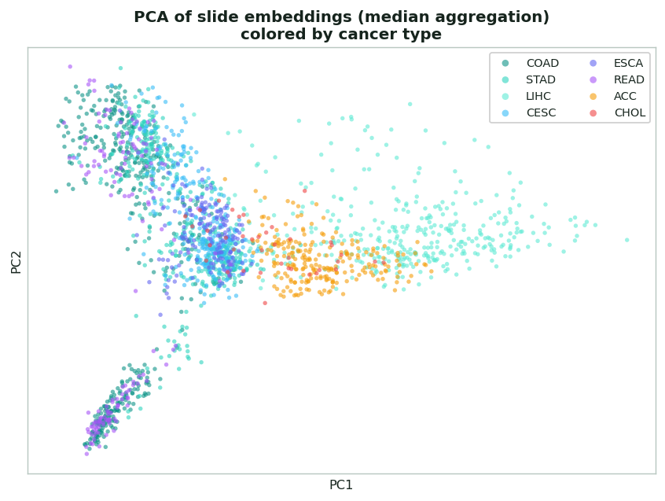
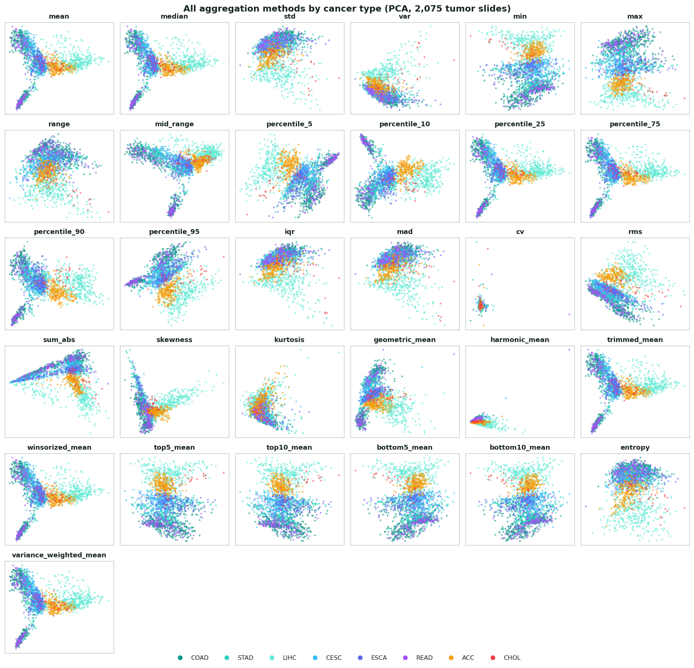
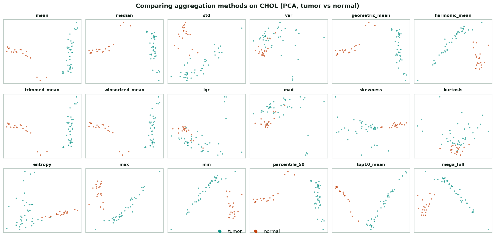
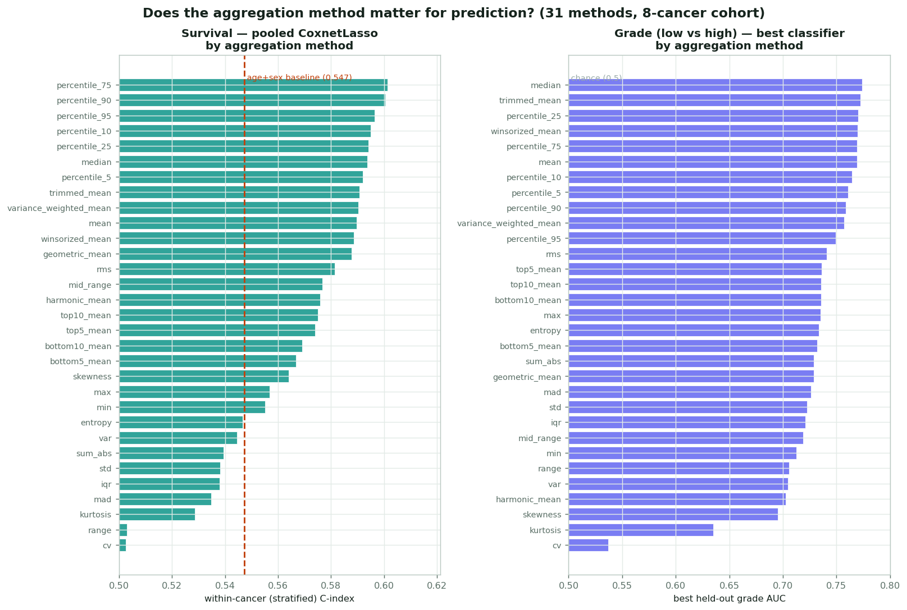

Aggregation, explained
Before any classifier or survival model runs, each slide's hundreds-to-thousands of patch embeddings must become one fixed-length vector. That step, aggregation, is quietly one of the most consequential choices in the whole pipeline. This page explains why it's needed, the statistics used, the "rich" default, and the wider menu of methods evaluated.
Why aggregate at all?
Models need a fixed-length vector; slides don't have one
After the UNI2 foundation model, each slide is a stack of patch vectors (N × 1,536), but N differs from slide to slide (one slide might have 800 patches, another 40,000). Classical models (the Cox, Coxnet, KNN, forests on the other two pages) require every sample to be the same length.
Aggregation solves this by summarizing the whole stack into one fixed-length slide vector, collapsing the patch dimension while trying to preserve the information that distinguishes slides.

The summary statistics

Each statistic answers a different question
Think of one of the 1,536 embedding dimensions: across a slide's patches it has a whole distribution of values. A single number has to summarize that distribution, and different statistics keep different things:
- Mean: the typical value (overall character of the slide).
- Std: how much patches vary (tumor heterogeneity).
- Percentiles (P10–P90): the shape and tails, robust to outliers.
Using several statistics together keeps far more signal than the mean alone, which can wash out a small but important region of a slide.
The "rich" default
The shipped pipeline concatenates six statistics per dimension (mean, std,
P10, P25, P75, P90), turning each slide's N × 1,536 patch matrix into a single
9,216-dimensional vector (6 × 1,536). It captures central tendency
(mean), spread (std), and the distribution's shape and tails
(the four percentiles) while staying simple, deterministic, and cheap to compute,
important on a thermally-constrained laptop. A plain mean-only aggregation
(1,536-dim) is also supported as a lightweight fallback.
The broader taxonomy
The "rich" six are a deliberate subset of a much larger menu of aggregation methods explored in earlier runs. Grouped by what they capture:
| Family | Methods | Captures |
|---|---|---|
| Central tendency | mean, median, trimmed mean, winsorized mean, geometric & harmonic mean | the typical patch value, with varying outlier-robustness |
| Spread | std, variance, range, IQR, MAD, coefficient of variation, mid-range | how heterogeneous the slide's patches are |
| Shape | skewness, kurtosis, entropy | asymmetry and tail-heaviness of the distribution |
| Percentiles | P5, P10, P25, P50, P75, P90, P95, min, max | the full profile of the distribution, robustly |
| Extremes | top-5/10 mean, bottom-5/10 mean | the most distinctive (often most diagnostic) patches |
| Weighted / energy | entropy-weighted mean, variance-weighted mean, RMS, sum-abs | emphasis on informative or high-magnitude patches |
| Combined ("mega") | mean+minmax, mean+extremes, central+spread, robust, full distribution | concatenations spanning several families at once |

Seeing it: PCA of the aggregated embeddings
The clearest way to feel what aggregation does is to project the slide vectors down to 2 dimensions with PCA and look. These are real embeddings from the project, not synthetic.
All 8 cancers, mean aggregation
Each point is one slide's mean-aggregated embedding, colored by cancer type. Even with no labels given to the projection, cancers occupy distinct regions: adrenocortical (ACC) pulls cleanly to one side, and the gastrointestinal cancers (COAD, STAD, READ, ESCA) overlap as you'd expect from related tissue.


Every method, by cancer type
To compare the whole aggregation menu fairly, all 2,075 tumor slides were re-aggregated from the raw patch embeddings with each of 31 methods, then projected by PCA and colored by cancer type. The choice of statistic genuinely reshapes the embedding space: mean, median, the percentiles and trimmed/winsorized means preserve the cancer-type structure most clearly; spread measures (std, IQR, MAD) give a complementary view; and a few (coefficient of variation, harmonic mean) collapse most of the signal, a visual argument for why the pipeline's "rich" default leans on mean + percentiles.

A complementary view: tumor vs normal (CHOL)
The same method menu on the original CHOL cohort, colored by tumor vs normal instead of cancer type. Almost every method separates tumor from normal tissue, which is why tumor-vs-normal classification saturates at AUC ≈ 1.0, and why the interesting differences between methods only surface on harder targets like tumor grade.

Does the method matter for prediction?
PCA shows the aggregation choice reshapes the embedding structure, but does it change what we can actually predict? To find out, every one of the 31 methods was run through the same two downstream pipelines: pan-cancer pooled survival (cancer-stratified 5-fold CV, CoxnetLasso on the WSI features, 1,608 patients / 557 events) and tumor-grade classification (low G1/G2 vs high G3/G4, 926 graded slides, grouped by participant). Each method is then ranked by its held-out performance.

The answer is a clear yes: survival concordance spans 0.50 → 0.60 and grade AUC spans 0.54 → 0.77 depending purely on how the patch embeddings are pooled. And the ranking tells a consistent story: central-tendency and percentile statistics win (median, the 75th/90th percentiles, trimmed and winsorized means), robust statistics slightly edge out the plain mean on both tasks, while pure spread/shape measures lag: std, IQR and MAD land near the age+sex baseline (0.547), and the coefficient of variation collapses to chance (C ≈ 0.50, grade AUC 0.54). It's the percentiles, not the spread, that carry the signal, which is exactly why the pipeline's shipped "rich" default combines mean + percentiles.
| Aggregation method | Survival C (stratified) | Grade AUC |
|---|---|---|
| percentile_75 | 0.601 | 0.769 |
| percentile_90 | 0.600 | 0.759 |
| median | 0.594 | 0.774 |
| percentile_25 | 0.594 | 0.770 |
| trimmed_mean | 0.591 | 0.772 |
| mean | 0.590 | 0.769 |
| winsorized_mean | 0.589 | 0.770 |
| geometric_mean | 0.588 | 0.729 |
| rms | 0.581 | 0.741 |
| age + sex baseline | 0.547 | — |
| entropy | 0.547 | 0.734 |
| std | 0.538 | 0.723 |
| iqr | 0.538 | 0.721 |
| kurtosis | 0.529 | 0.635 |
| cv (coef. of variation) | 0.503 | 0.537 |
Representative subset of the 31 methods (full tables in
results_v2/agg_full/survival_method_comparison.csv and
classification_grade_method_comparison.csv). Caveat: this is a
thermally-light first pass: pooled 5-fold CV with a fixed 50-component PCA and a 200-sample
bootstrap. The ranking is robust, but the absolute numbers will firm up under the planned
full-rigor rerun (leave-one-participant-out + 1,000-sample bootstrap). Tumor grade is pooled
across cancers whose grading systems differ, so it ranks methods on a fixed label set rather
than making a clinical-grade claim.